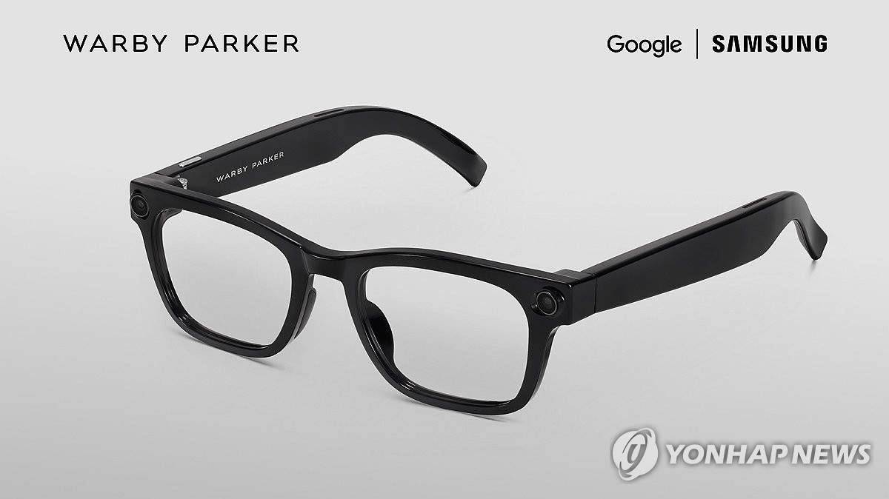
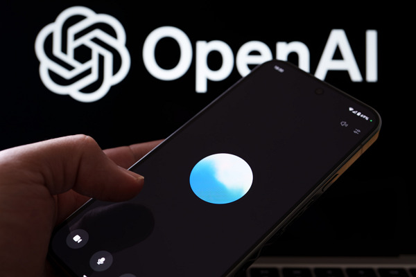
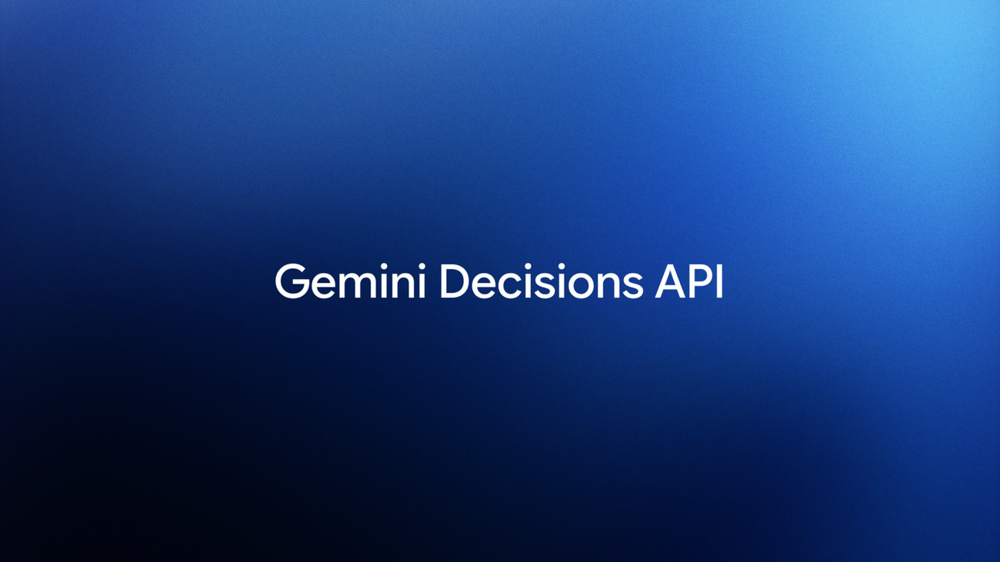

01 · KR
SK하이닉스 기업용 ChatGPT
보안 → 단계적 확장
SK하이닉스가 사내 AI 활용 확대를 위해 기업용 ChatGPT 도입을 검토·파일럿한다. 비핵심·소프트웨어 개발부터 시작해 보안·시스템 구조를 확인한 뒤 반도체 개발로 넓히는 방향이다.
원문 보기 ↗ADDIT INSIGHT
데이터 경계·입력 금지·감사 로그·승인선을 모델보다 먼저 설계하자.
제조·반도체·안경·음성·판단 업무로 확장되는 AI 사례를 통해 자동 실행의 경계와 사람의 승인선을 살펴봅니다.
오늘은 편의 기능이 만든 보안 경계, 웨어러블 프라이버시, 제조 현장의 사람 검토선을 함께 점검합니다.
클로드 코드 설정파일에서 3만여 개 비밀정보 확인, 자동 승인 경계 점검
Claude for Manufacturing, 견적·품질·설비 진단을 검토선까지 연결
Gemini Decision 1, 최대 1,000개 판단을 병렬 처리
삼성 AI 안경과 Gemini, 기기·일상으로 확장되며 프라이버시 기준 필요
SK하이닉스 기업용 ChatGPT 파일럿, 핵심기술 보호와 도입의 균형
보안 → 단계적 확장
SK하이닉스가 사내 AI 활용 확대를 위해 기업용 ChatGPT 도입을 검토·파일럿한다. 비핵심·소프트웨어 개발부터 시작해 보안·시스템 구조를 확인한 뒤 반도체 개발로 넓히는 방향이다.
원문 보기 ↗데이터 경계·입력 금지·감사 로그·승인선을 모델보다 먼저 설계하자.

기기 → 맥락
삼성전자가 Gemini를 탑재한 AI 안경 30개 모델을 공개했다. 번역·길찾기·회의 요약 등 맥락형 기능과 함께 카메라 작동 표시등 등 프라이버시 장치를 제시했다.
연합뉴스 원문 ↗ 관련 영상 ↗주변인 동의와 촬영 신호를 제품 경험에 내장해야 한다.

기능 → 일관성
OpenAI는 Advanced Voice와 Standard Voice를 12월 11일 종료하고 Live 중심으로 전환한다. 통합 배경과 사용량 증가는 분명하지만 기존 모드의 선택권과 접근성에 대한 이용자 우려도 남았다.
원문 보기 ↗기능 통합 때는 전환 기간·기록 보존·대체 경로를 함께 설계하자.
자동화 → 검토
Anthropic은 견적·품질·운영·공급망·설계와 설정을 다루는 제조 현장용 17개 스킬과 업무 커넥터를 공개했다. 고객·공급사 접점에는 사람의 검토·승인을 전제로 하며 장비를 직접 조작하지 않는다.
Anthropic 원문 ↗ 관련 보도 ↗ROI는 사람 대체가 아니라 데이터 연결과 책임선 보존으로 측정하자.

생성 → 선택
Google은 분류·라우팅·정책 확인·도구 선택에 특화한 Gemini Decisions API와 Decision 1을 공개했다. 한 번의 멀티모달 입력으로 최대 1,000개의 독립 질문을 처리하도록 설계됐다.
Google 원문 ↗ 관련 보도 ↗정답률과 함께 불확실성·거부 기준·사람 이관 조건을 운영하자.